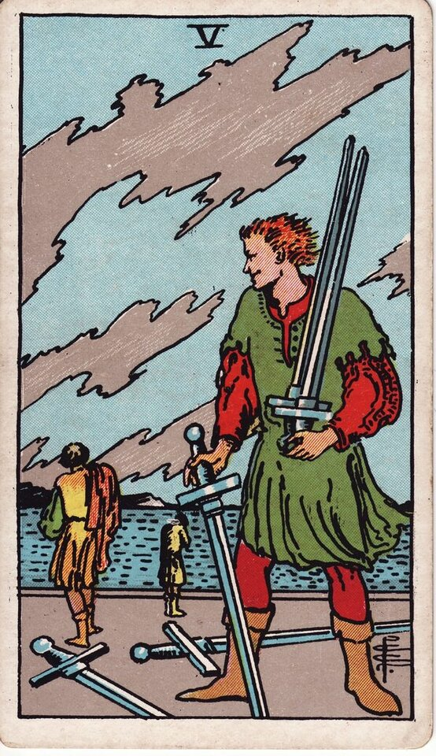

Minor Arcana · Suit of Swords
Five of Swords Tarot Card Meaning
The Five of Swords is the hollow win — conflict, cost, and being right in a way that loses. Want to know what it means in your spread? Every reader on our line is hand-vetted — connect in under 60 seconds, $1 for your first minute, hang up anytime.
- Hand-vetted readers
- Available 24/7
- Hang up anytime

Five of Swords — What It Shows
A figure smirks as he gathers up swords while two others walk away defeated, heads down, under a torn, windy sky. Nobody looks happy — not even the "winner." After the rest of the Four, the Five is conflict re-entered without wisdom: a victory that costs more than it's worth, or a defeat that stings. The card asks who really won here.
Five of Swords Upright Meaning
Upright, the Five of Swords is conflict, hostility, and hollow victory. Winning at a cost, point-scoring, burned bridges, or a defeat that humbles. Sometimes you're the figure with the swords; sometimes you're the one walking away. Its core message: ask whether being right is worth what it costs you.
Five of Swords Reversed Meaning
Reversed, the conflict winds down. Reconciliation, making amends, choosing peace over winning, or walking away from a fight that has no prize. Less positively, it's lingering resentment — refusing to let a battle end even after it's over.
Five of Swords in Love & Relationships
In love, the Five of Swords is argument, hostility, or a fight where "winning" damages the relationship. Example: a caller determined to prove a partner wrong drew this card; the read flipped the question — winning the argument might cost the connection, so the real choice was being right versus being close.
Five of Swords in Career & Money
For work it's office conflict, a pyrrhic win, a power struggle, or burning bridges to come out on top. Example: someone planning to "win" a workplace dispute pulled this card; the message warned that the victory could be hollow and the reputational cost high — pick the battle carefully.
Five of Swords as Advice
As advice: count the cost of winning. Decide whether this conflict is worth the damage, and consider that walking away or making peace may be the stronger move than being right.
Five of Swords Reversed in Love & Career
Reversed, this card deserves a closer look by area. In love, the hopeful read is a fight ending — apology, reconciliation, choosing the relationship over the point; the harder read is grudge-holding, refusing to forgive, or a cold war that won't thaw. In career, reversed it's a conflict resolved and amends made, or simmering resentment poisoning a team. The reversed Five's question is whether the fight is genuinely over or just buried. A live reader can tell you which, and whether peace is real.
What People Ask About the Five of Swords
The questions readers hear most about this card:
"Does it mean an argument is coming?"
Often — conflict or hostility, sometimes one you can choose to avoid.
"Five of Swords as feelings?"
Defensive, resentful, "I want to win this" — rarely warm.
"Am I the winner or the loser?"
Position and surrounding cards show which role is yours.
"Should I keep fighting?"
The card usually warns the win isn't worth the cost.
Five of Swords — Yes or No?
Leans no — conflict and cost outweigh any win. Reversed can shift toward yes if reconciliation is chosen.
Five of Swords Timing in a Reading
Timing is the least precise thing tarot does, so treat this as a lean, not a date. As an air-suit five, readers usually place its conflict in the near term — days to a couple of weeks, an active clash rather than a long siege. Reversed, resolution (or grudge) extends the timeline. A live reader reads timing from the full spread and your question far more reliably than the card alone.
Five of Swords Card Combinations
Context changes everything — a few pairings readers see often:
Five of Swords + Justice
A dispute, legal conflict, or being held to account.
Five of Swords + Five of Wands
Open, ongoing conflict — competition turned hostile.
Five of Swords + Ace of Cups
Choosing connection and peace over winning the fight.
Five of Swords in a Tarot Reading
A meanings page is the map; a live reading is the territory. The Five of Swords shifts with its position and the cards around it — which is what a hand-vetted reader interprets for your question. See the full Suit of Swords, all 56 cards on the Minor Arcana hub, or start a phone tarot reading.
← Four of Swords · Next: Six of Swords →
What Does the Five of Swords Mean for You?
A meanings list is the map; a live reading is the territory. We'll connect you with the right hand-vetted tarot reader in under 60 seconds. $1/min first call · 15 minutes for $10 · hang up anytime · 100% satisfaction promise.
Call (888) 920-6662 NowFive of Swords — Frequently Asked Questions
What does the Five of Swords mean?
Conflict and hollow victory — winning at a cost, defeat, or hostility.
What does it mean reversed?
Reconciliation and amends — or lingering resentment that won't let go.
What does the Five of Swords mean in love?
Argument or point-scoring where winning damages the relationship.
Is it a yes or no card?
Leans no; reversed can move toward yes with reconciliation.
How much does a reading cost?
First-time callers pay $1/min, or 15 minutes for $10, and you can hang up anytime.
Get Your Tarot Reading Now
Connected to a hand-vetted reader in under 60 seconds, the cards pulled on your real question, and you hang up with clarity.
Call (888) 920-6662